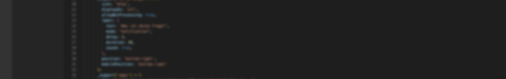

Alles wichtige zu "New Cheeter"

Lange haben wir es uns zur Aufgabe gemacht zu versuchen uns selbst zu finden, Wir haben damit angefangen Tipps zu Spielen zu machen. "Wir" war aber nicht lange da nach paar Monaten der CO - CEO "Jojo" das Projekt verlassen hat. Seitdem habe ich das Projekt übernommen und das Cheeter Image wurde gefühlt 10x verändert: Von Spiele Tipps zu gesund leben zu Technik und bestimmt noch 10 weitere ideen, einmal wurde es sogar "Luna" gennant was aber wegen amazon iweder geändert wurde aber:
was
ist jetzt New Cheeter? New Cheeter ist alles in einem wenn sie schon auf unserer Homepage waren wissen sie das wir Spiele, Websites und Blogs programmieren und "AI" was aber noch nicht in planung ist (ich bin einfach schlecht.) Naja, aufjedenfall hoffe ich auf eine gute Zukunft für Cheeter.
- Kuki